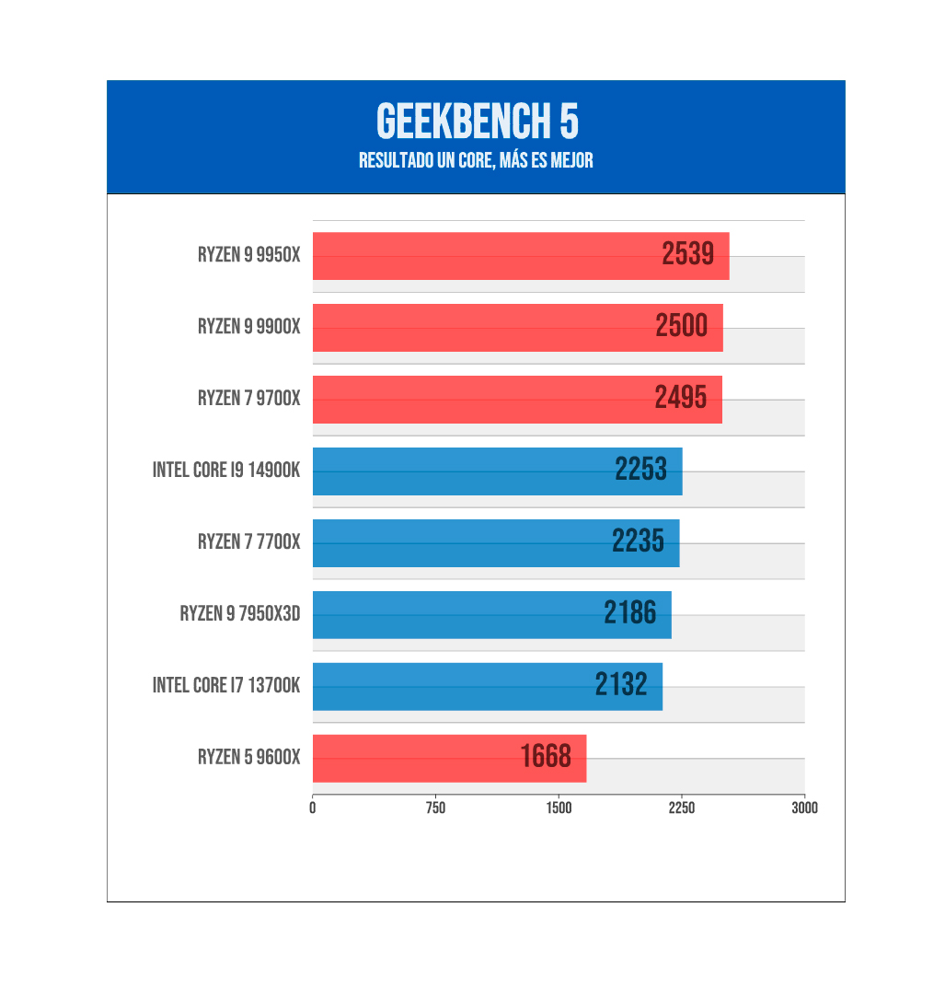

Arquitectura Básica del Procesador
El procesador (CPU, Central Processing Unit) es el componente más importante dentro del PC. Es el cerebro de todo el funcionamiento del sistema, el encargado de dirigir todas las tareas que lleva a cabo el equipo y de ejecutar el código de los diferentes programas. Muchas veces, con la ayuda del resto de componentes y periféricos. Desde un punto de vista físico, una CPU es una estructura muy compleja que se compone de miles de millones de transistores fabricados con silicio. Estos se combinan formando puertas lógicas. Estas sirven para formar las diferentes estructuras que permiten tratar las instrucciones de manera ordenada y la ejecución del código. La velocidad de un procesador viene expresada en hercios (Hz). Esto mide la cantidad de operaciones que la CPU realiza. El proceso lo lidera una señal llamada “reloj”. Suele consistir en una señal digital de onda cuadrada que marca el compás. El reloj es la cantidad de pulsos por segundo a la que trabaja la CPU. En la actualidad tenemos procesadores con más de 3 GHz de velocidad. Estos pueden realizar 3.000 veces ciclos de reloj más que los primeros procesadores que salieron al mercado hace décadas.
- Aquí un ejemplo de los procesadores que mejor rendimiento tienen en el mercado:
